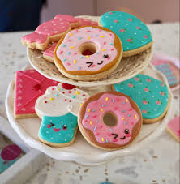

Sobre a Ruzzene Cakes
Lozalizada no bairro Sagrada Família em Belo Horizonte, a Ruzzene Cakes é uma confeitaria e doceria artesanal especializada em entregar os melhores momentos em forma de doces bolos. Fundada por um gastrônomo apaixonado por trazer o melhor aos seus clientes, a Ruzzene Cakes já é destaque na cidade e conquista novos clientes a cada dia, sem deixar de pensar naqueles que por escolha de vida vegana ou por restrições, não consumem ingredientes tão presentes na confeitaria, como o glúten, açucar, lactose e demais.
Nossa missão é: "Proporcionar qualidade e sabores inesquecíveis e entregar aos nossos clientes o que eles desejarem".
Oferecemos profissionais experientes e antenados às mudanças no mundo da gastronomia. O atendimento possui padrão de excelência e agilidade, garantindo qualidade e satisfação juntamente com uma gama de opções.
Nosso estabelecimento
Nosso estabelecimento está localizado na zona leste da cidade.
Benefícios
- Profissional especializado
- Cardápio amplo
- Opções veganas
- Ingredientes de qualidade
- Sabores surpreendentes
- Encomendas em grande escala
- Produções temáticas